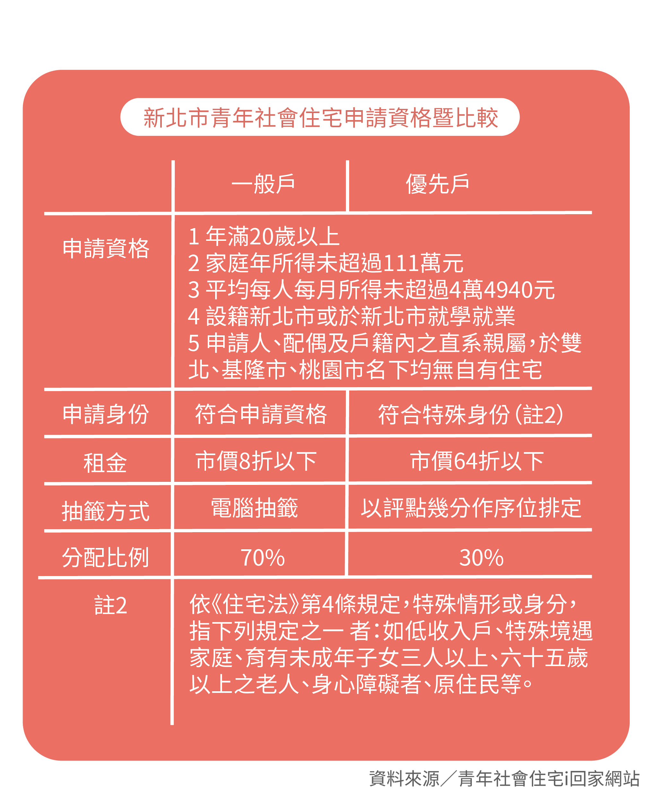

近年各縣市力推青年住宅，以新北市青年社會住宅為例，申請抽籤時需先選定房型，分為套房及二或三房，且抽籤結束後不得轉換房型。然而，房型分配比例相當懸殊，總數81戶中，二或三房卻僅佔13戶。今年新北市青年社會住宅中和館二或三房的正取民眾蔡芙芸便表示，由於優先戶能夠先選房，且大部分的優先戶皆挑選二或三房，導致即使已是正取戶，卻選不到房。她認為，現行的制度等於二或三房全數保留給優先戶，對一般戶相當不公平。
可申請社會住宅的身份分為一般戶及優先戶，原意在於能夠將房屋留給真正需要的民眾。今年五月卻有取得入住資格的民眾，將社會住宅轉手至租屋網當二房東。經查證後，更發現該住戶為優先戶，讓大眾對入住者的身分稽查產生疑慮。新北市政府城鄉發展局對此回應，未來將加強身分稽查，若發現租客冒名頂替入住或實際轉租，將依契約規定提前解約，並沒收一個月的押金，且2年內不得再申請；後續也將加強宣導承租戶管理規則。
三月底甫公布抽籤結果的新北市青年社會住宅中和館，候補名單多達上千人，但小坪數的套房卻還有剩，明顯可看出房型熱門度的差異。國立政治大學地政學系教授張金鶚建議，政府應在興建公宅前確實做好需求調查，「政府蓋房子是很花錢的，如果產品定位不清，反而造成資源的浪費，是很不應該的。」另外，他也點出應以了解弱勢族群為優先，才能訂定適當的房型配比，避免有類似爭議發生。
目前《住宅法》規定，社會住宅保留給弱勢者入住的比率至少30%，且對未設籍於當地的青年創業者，提供一定比率入住，例如台北市訂出5%。張金鶚感嘆，30%是最低標準，「但真的有落實嗎？」由於弱勢族群更容易因資訊不對稱而錯失資源，因此如何在供給與需求間找到平衡，以真正落實公平，方為關鍵。如果能從空屋率、住客資格、民眾滿意度等，對比政府投入成本，進而檢視政府績效，社會住宅才有正面意義。
以往曾有社會住宅位於精華地段，又是大坪數、智慧設計，將租金層層推升，讓好不容易抽到籤的民眾望之卻步，只能退租。張金鶚認為，可以視申請者的收入條件彈性調整租金折扣，但前提在於「地點要對、造價要對」。他舉例，新加坡的社會住宅相對樸實，但台灣的配有全套家具，裝潢過度豪華，使得租金居高不下，保障住房弱勢權益的立意良善遭到扭曲，資源因此被壓縮，反而淪為政府宣傳政績的手段，值得檢討。
他認為，官方為配合政策口號或業績而廣設社會住宅，就容易忽略細節的評估，例如地價與租金的連動性，「蓋房子是為了蓋房的人還是住房的人？」尤其近年搭上科技趨勢流行智慧宅，但張金鶚提醒，「入住後的維護成本很高，如果維護不周反而會造成浪費或使用上的不便。」
張金鶚表示，社會住宅是提供給難以進入租屋市場的社經弱勢族群，「起到補充的作用」，例如年長者、身心障礙人士等。但台灣目前社會住宅佔整體住宅比例不到1%，在數量不多的情況下，「就應該給最需要的人」。然而，針對青年推出公共住宅，「某程度上是政治考量，不是解決問題的根本辦法」，再加上「僧多粥少」，青年依然很難抽到一處落腳地。因此，張金鶚認為，應落實租金補貼或包租代管，由政府或租屋服務業者向民眾承租住宅，再轉租給弱勢民眾及代為管理，也就是政府扮演二房東的角色，或許才能解決台灣眼下的租屋困境。
但不論租金補貼抑或是包租代管，成效都還有待觀察，因為房東會避免呈報租賃所得，「大家都在逃漏稅，租房市場是一個嚴重的黑市，政府管不了。」張金鶚表示，相較於提供部分租金這類明顯可見的需求面補貼，政府蓋房屬於供給面補貼，不僅成本高又沒效率。 一般民眾多因為不了解背後的運作機制，才容易認為蓋越多、越智慧、越便宜、住越久越好。